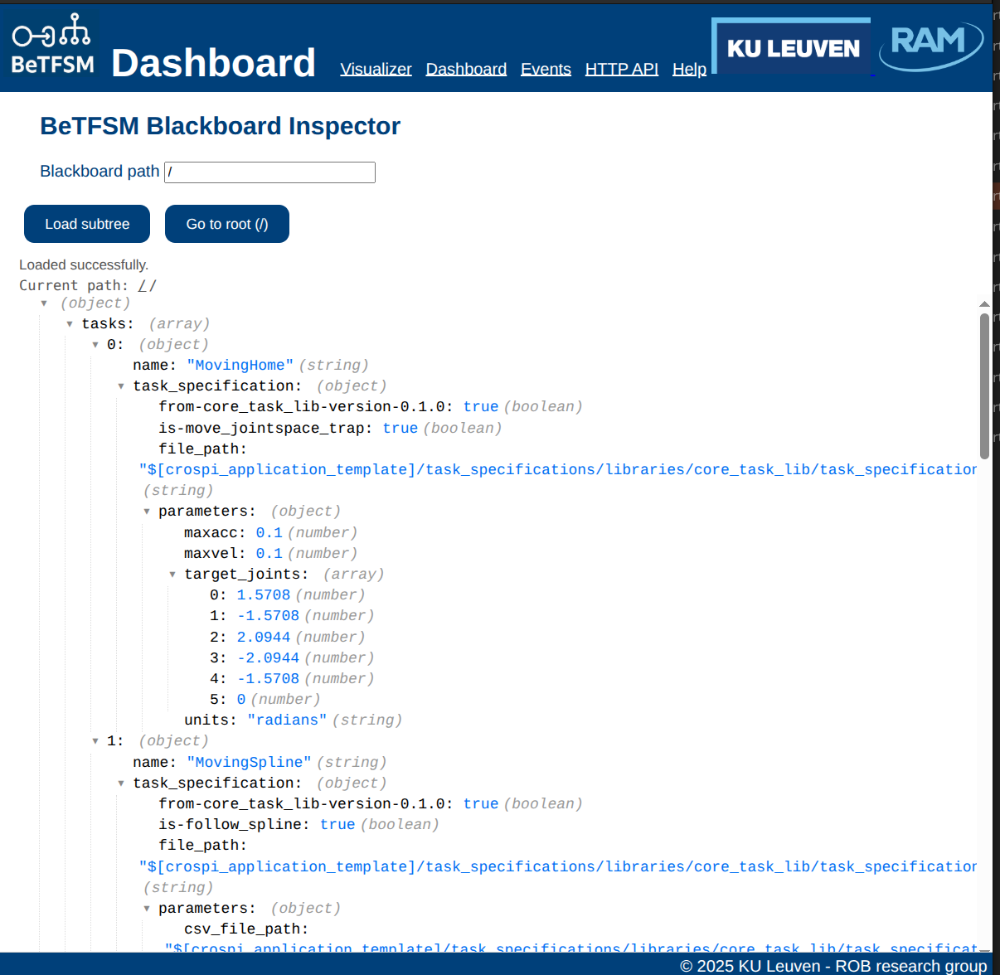
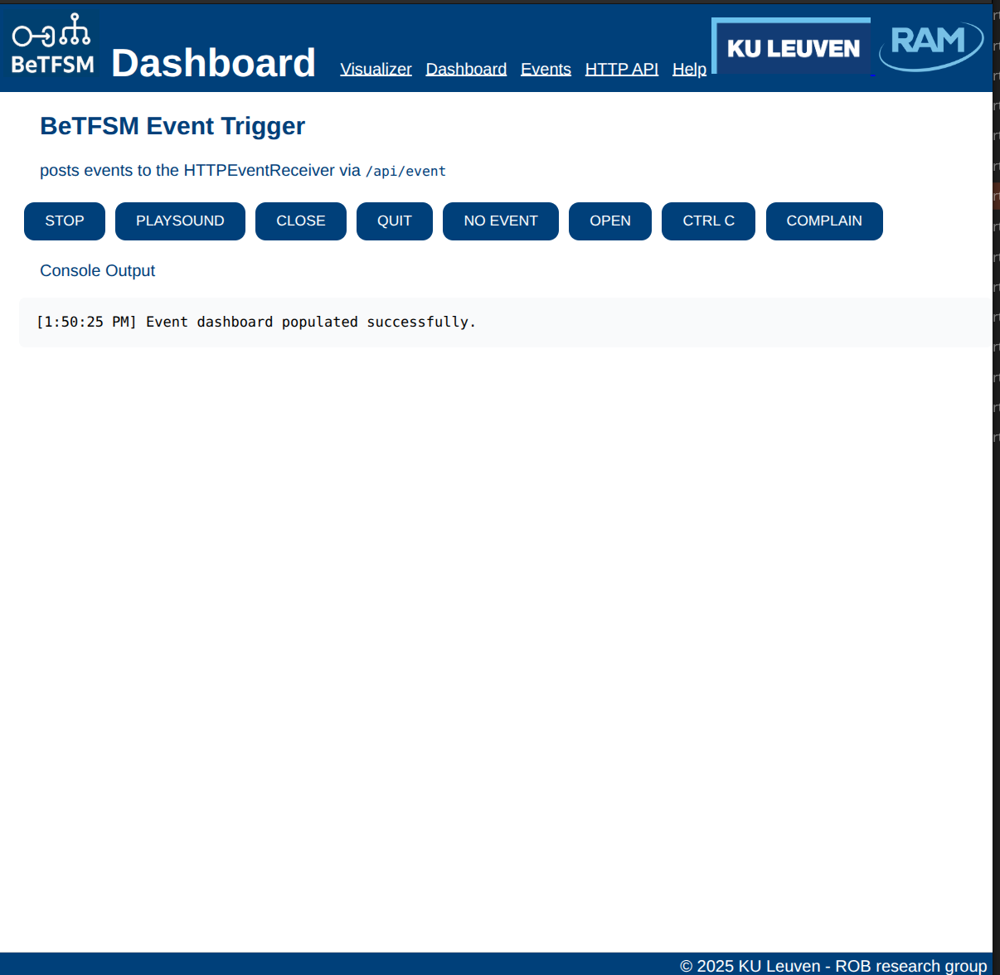

Executing and visualizing a BeTFSM Tree
This tutorial goes deeper in how we can execute, configure the execution of a BeTFSM tree, add additional debug information and visualize the execution
Running the BeTFSM web-server user interface
Runner or ROSRunner provides a way to execute, a graphical user interface to monitor a BeTFSM-tree, and a way to configure your BeTFSM from the command prompt.
A webserver will be started that serves the graphical user interface at localhost:8000 (it uses 0.0.0.0, so it
remains local and does not serve outside your computer by default).
The console output will provide a link. When you need to run different BeTFSM executions:
- Check whether you could run on the same execution using a Concurrent node.
- Execute it separately and configure the BeTFSM to serve the visualizations on a different web-addres.
Visualization and debugging output happen at the publish_frequency, which is different from the frequency at which the BeTFSM nodes are ticking.
When the BeTFSM execution stops, the front-end page will remain active and will be polling at a slow frequency to ensure that it is possible to stop the BeTFSM execution, and when you later restart, the page and the BeTFSM will find each other again.
You can also use the command-line arguments not to execute, but to generate a .dot file, in GraphViz format, or to generate a .json file that can be used for further analysis of the BeTFSM-tree. Currently the .json format does not contain enough information to reconstruct the BeTFSM tree.
For example to visualize the tree using Graphviz, you could do:
gui_example_simple1 --generate_dot gui_example_simple1.dot
xdot gui_example_simple1.dot
The basic instructions to run your BeTFSM tree are very easy:
sm = build_tree()
runner = Runner(sm,bb, frequency=100.0, publish_frequency=5.0, debug=False, display_active=False)
outcome=runner.run()
This is a full description of how to call the Runner in Python and of the command line arguments to further configure during execution time.
A full example can be found in betfsm/betfsm_examples/guiexample_simple1.py
#!/usr/bin/env python3
import threading
import webbrowser
# ---- building the state machine -----
from betfsm import (
Sequence, ConcurrentSequence, TimedWait, TimedRepeat, Message, SUCCEED, get_logger,Runner
)
# ---------------------------------------
def build_tree():
sm = Sequence("concurrent_sequence_outer", [
Message(msg="This demo uses ConcurrentSequence, Sequence, TimedRepeat"),
Message(msg="--- concurrent_sequence started ---"),
ConcurrentSequence("concurrent_sequence", [
Sequence("sequence1", [
Message(msg=" --- sequence 1 started ---"),
TimedRepeat("timedrepeat1", 5, 5, Message(msg=" sequence 1: 5 times every 5 second")),
Message(msg=" --- sequence 1 ended ---")]),
Sequence("sequence2", [
Message(msg=" --- sequence 2 started ---"),
TimedRepeat("timedrepeat1", 10, 6, Message(msg=" sequence 2: 10 times every 6 second")),
Message(msg=" --- sequence 2 ended ---")]),
Sequence("sequence3", [
TimedWait("waiting 20 sec", 20.0),
Message(msg="I like to interrupt!")]),
]),
Message(msg="--- concurrent_sequence ended ---")
])
return sm
# ---------------------------------------
def main():
bb = {}
sm = build_tree()
runner = Runner(sm,bb, frequency=100.0, publish_frequency=5.0, debug=False, display_active=False)
runner.run()
if __name__ == "__main__":
main()
Other examples are provided in guiexample_simple2.py and guiexample_large.py.
Using the GUI : BeTFSM Visualizer
Go with a webbrowser to localhost:8000 after you have started the BeTFSM server. Once you loaded the page, you can start/stop the server and the page will automatically reload if the server becomes available again (checking every 5 seconds).
The GUI displays a tree representing the BeTFSM tree. The orange nodes are currently active.
In the GUI nodes can be expanded or collapsed by pressing the "-" or "+" ons the right side of each node. You can also expand all nodes or collapse all nodes.
Very handy is the AutoExpand option, this will collapse the tree but expand all nodes that are needed to visualize all active nodes.
The Play button and sliding bar are currently not implemented. Their purpose will be to go back and forward in time using a history of the execution.

Using the GUI : Dashboard
The dashboard allows you to inspect the blackboard during running. You can focus on a particular subtree of the blackboard by filling in the blackboard path and pressing the "load subtree" putton.

Using the GUI : Events
The GUI:Events presents you with a list of HTTP events that could trigger the BeTFSM tree. The list of HTTP events is made at construction time, such that we have no guarantee that the BeTFSM node checking the events is active.
The list of events is presented as a series of buttons, that you can press to generate the event. Note that there are sometimes event buttons that are not related to HTTPEvents. This is because when combining HTTPEvent_Conditions with other Conditions using the "|", "&" or "Not" operators the events generated by the other Conditions become available for the HTTPEvent_conditions.
You can exploit this for debugging by adding HTTPEvent_Conditions() to existing conditions.

Communicating with BeTFSM using HTTP
In the Swagger documentation at http://localhost:8000/docs (available when the Runner is running), you can find the HTTP api for the BeTFSM runners. You can use it to send events to BeTFSM and read or write the blackboard. There are also other API endpoints that are used for the BeTFSM visualisation (e.g. /api/tree, api/alive and the websocket).
The HTTPEvent_Condition can be used in a BeTFSM tree to react to an HTTP event that is send by sending a JSON message {"channel": "betfsm", "event": ""} to /api/event.
The blackboard can be changed by GET and PUT messages to /apt/blackboard/path where path is a path inside the blackboard. Look at the HTTP API or get_path_value and set_path_value for more detail on the syntax and options for the path.
The HTML file example_advant.html contains an example of how to send HTTP events in a small HTML/javascript application.